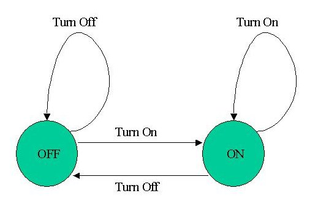

|
Algorithmic Forays Part 1
I want to present an important and interesting topic in computer science, the Finite State Machine (FSM). In this part we start with the basics, gaining an understanding of what FSMs are and what they can be used for. This part is very elementary, so please be patient. In subsequent parts things will become much more complicated and interesting. Finite State Machines - What are they?A finite state machine is a conceptual model that can used to describe how many things work. Think about a light bulb for instance. The circuit consists of a switch, that can be ON or OFF, a few wires and the bulb itself. At any moment in time the bulb is in some state - it is either turned on (emits light) or turned off (no visible effect). For a more focused discussion, let's assume that we have two buttons - one for "turn on" and one for "turn off". How would you describe the light bulb circuit? You'd probably put it like this: When it's dark and I press ON, the bulb starts emitting light. Then if I press ON again, nothing changes. If I press OFF the bulb is turned off. Then if I press OFF again, nothing changes. This description is very simple and intuitive, but in fact it describes a state machine! Think of it the following way: we have a machine (the bulb) with two states, ON and OFF. We have two inputs, an ON switch and an OFF switch. If we are in state ON, pressing ON changes nothing, but pressing OFF moves the machine to state OFF. If we are in state OFF, pressing OFF changes nothing, but pressing ON moves the machine to state ON. The above is a rephrasing of the first description, just a little more formal. It is, in fact, a formal description of a state machine. Another customary way to describe state machines is with a diagram (people like diagrams and drawings more than words for some insights):  Textual descriptions can become quite wordy, and a simple diagram like this can contain a lot of information. Note how states are represented by circles, and transitions by arrows. This is almost all one needs to know, which makes diagrams very descriptive. This state machine can also be translated to (C++) code: ...
...
typedef enum {ON, OFF} bulb_state;
typedef enum {TURN_ON, TURN_OFF} switch_command;
...
...
bulb_state state;
switch_command command;
switch (state)
{
case ON:
if (command == TURN_ON)
{
}
else if (command == TURN_OFF)
{
state = OFF;
}
break;
case OFF:
if (command == TURN_ON)
{
state = ON;
}
else if (command == TURN_OFF)
{
}
break;
default:
assert(0);
}
If code such as this looks familiar, it's hardly surprising. Many of us write state machines in our code without even noticing. Most of the state machines we write are "implicit", in the sense that there isn't a single switch statement that handles the whole machine, but rather it's distributed throughout the whole program. If, additionally, the state variables don't have the word "state" in their name, guessing that a certain code is a state machine in disguise is even harder. Many programs we write are state machines. Think about a chess game for a moment. If we write a program to play chess against human beings, it's actually a state machine in some sense. It waits for the human to move - an idle state. Once the human moves, it goes into active state of "thinking" about a move to make. A game can have an "end" state such as a victory for one side or a draw. If we think of a GUI for a chess game, the state machine is even more obvious. There is a basic state, when it's a human's move. If a human clicks on some piece, we go into the "clicked" state. In this state, a click on an empty tile may produce a move by the piece. Note that if we click on an empty tile in the "basic" state (no pieces selected), nothing happens. Can you see an obvious state machine here? Finite?In the beginning of this part, I said we were going to discuss FSMs. By now I hope you already know what a state machine is, but what has "finite" got to do with it? Well, our computers are finite. There's only so much memory (even if it's quite large these days). Therefore, the applications are finite. Finite = Limited. For state machines it means that the amount of states is limited. 1 is limited, 2 is limited, but 10e7 is also limited, though quite large. This point may seem banal to some of you, but it is important to emphasize. So now you know what a FSM is: a state machine with a finite number of states. [It can be inferred that all state machines implemented in computer hardware and software must be FSMs. - Ed.] Employing state machines for our needsState machines can be also used explicitly. We can benefit a lot from knowingly incorporating state machines in our code. First and foremost, it's a great way to reason about difficult problems. If you see that your code or a part of it can actually be in several states, with inputs affecting these states and outputs resulting from them, you can reason about this code using a state machine. Draw a diagram; visualizing always helps. With a diagram errors can be spotted more easily. Think about all the inputs to your code - what should they change in every state? Does your code cover all possibilities (all inputs in all states)? Are some state transitions illegal? Another use of state machines is for certain algorithms. In the next part you'll see how essential state machines are for a very common and important application: regular expressions. © Copyright by Eli Bendersky, 2003. All rights reserved. Discuss this article in the forums
See Also: © 1999-2011 Gamedev.net. All rights reserved. Terms of Use Privacy Policy
|